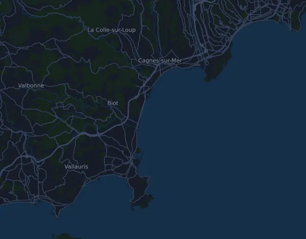

Marathon des Alpes-Maritimes Nice-Cannes – Marathon 42.2 km
- Distance
- 42.2 km
- Elevation gain
- ↑ 306 m
- Highest point
- 35 m a.s.l.
- Surface
- Road
- Profile
- Gently rolling
- Start
- 08:00
- Aid stations
- 18
Elevation profile
Prepare with Mila
Mila is a running coach app. Add a race to your plan and the coach plans your weeks up to race day around your form, and gives you a finish-time forecast and a plan for pacing, drinks and fuel on the course.

The right run, on the right day.
The course

About the course
The Marathon des Alpes-Maritimes Nice-Cannes – Marathon is a road race starting in Nice that never strays far from sea level: the course sits between -1 m and 35 m. Even so, it gathers 306 m of climbing and 307 m of descent, so expect a steady run of short rises and dips. The one longer climb starts at km 26.5 and gains 25 m over about 1.6 km at 1.6% on average, peaking at 35 m. It comes just as fatigue starts to build. There are 18 aid stations, the first at km 5 and then every 1.5 to 3 km. Sports drink and food are available at km 10, 15, 19.5, 25, 30.5, 35.5 and 38.5.
The course rewards a runner who can hold an even effort through constant small changes in gradient and run the climb after km 26.5 on feel rather than pace. With drinks this frequent, you can plan your fuelling around the stations and don't need to carry much.
This description is written by Mila’s coach with the help of AI, from the facts in Mila’s race register.
Climbs
| Starts at | Length | Gain | Gradient | Top (m above sea level) |
|---|---|---|---|---|
| km 26.5 | 1.6 km | 25 m | 1.6 % | 35 |
Before the start
Aid stations
| At | What's there |
|---|---|
| km 5.0 | water |
| km 7.5 | water |
| km 10.0 | water, sports drink, food |
| km 13.0 | water |
| km 15.0 | water, sports drink, food |
| km 17.0 | water |
| km 19.5 | water, sports drink, food |
| km 22.0 | water |
| km 25.0 | water, sports drink, food |
| km 27.0 | water |
| km 29.0 | water |
| km 30.5 | water, sports drink, food |
| km 32.5 | water |
| km 34.0 | water |
| km 35.5 | water, sports drink, food |
| km 37.0 | water |
| km 38.5 | water, sports drink, food |
| km 40.0 | water |
Start times
- 08:00
Source: marathon06.com, retrieved 15 October 2026
Pace table
Marathon des Alpes-Maritimes Nice-Cannes – Marathon 42.2 km in 3:00:00 – pace per km and splits
4:16 per km · km 10: 42:39 · km 21.1: 1:30:00 · km 30: 2:07:58 · km 40: 2:50:37 · finish: 3:00:00
Marathon des Alpes-Maritimes Nice-Cannes – Marathon 42.2 km in 3:30:00 – pace per km and splits
4:59 per km · km 10: 49:46 · km 21.1: 1:45:00 · km 30: 2:29:17 · km 40: 3:19:03 · finish: 3:30:00
Marathon des Alpes-Maritimes Nice-Cannes – Marathon 42.2 km in 4:00:00 – pace per km and splits
5:41 per km · km 10: 56:52 · km 21.1: 2:00:00 · km 30: 2:50:37 · km 40: 3:47:29 · finish: 4:00:00
Marathon des Alpes-Maritimes Nice-Cannes – Marathon 42.2 km in 4:30:00 – pace per km and splits
6:24 per km · km 10: 1:03:59 · km 21.1: 2:15:00 · km 30: 3:11:57 · km 40: 4:15:55 · finish: 4:30:00
The times assume an even pace the whole way. This is plain arithmetic, not a forecast: on climbs, in crowds and at aid stations the pace varies.
Frequently asked questions
When is Marathon des Alpes-Maritimes Nice-Cannes – Marathon 42.2 km?
Marathon des Alpes-Maritimes Nice-Cannes – Marathon 42.2 km takes place on Sunday, 7 November 2027. Check the date and start time with the organizer.
What time does Marathon des Alpes-Maritimes Nice-Cannes – Marathon 42.2 km start?
According to the organizer: 08:00.
How long is Marathon des Alpes-Maritimes Nice-Cannes – Marathon 42.2 km and how much climbing is there?
The race is 42.2 km with 306 m of climbing and 307 m of descent. The highest point is 35 m above sea level.
What is the course of Marathon des Alpes-Maritimes Nice-Cannes – Marathon 42.2 km like?
The course is gently rolling, with 7.3 m of climbing per km on average. It has one climb of at least 25 m, at km 26.5: 25 m over 1.6 km. It runs from the start to a finish in another place. The surface is road.
Are there aid stations at Marathon des Alpes-Maritimes Nice-Cannes – Marathon 42.2 km?
Yes. The organizer lists 18 aid stations: km 5.0 (water); km 7.5 (water); km 10.0 (water, sports drink, food); km 13.0 (water); km 15.0 (water, sports drink, food); km 17.0 (water); km 19.5 (water, sports drink, food); km 22.0 (water); km 25.0 (water, sports drink, food); km 27.0 (water); km 29.0 (water); km 30.5 (water, sports drink, food); km 32.5 (water); km 34.0 (water); km 35.5 (water, sports drink, food); km 37.0 (water); km 38.5 (water, sports drink, food); km 40.0 (water).
How should I pace Marathon des Alpes-Maritimes Nice-Cannes – Marathon 42.2 km?
Aim for an even effort rather than an even pace: let the pace drop on the climbs, win it back where it levels out, and hold back in the first kilometres. The biggest climbs start at km 26.5. In Mila you get a pace plan for this course, based on your own form.
More races like this
More races nearby
- Marseille-Cassis – AG2R La Mondiale 20 km31 October 2027 · Marseille, France
- Harmonie Mutuelle Marathon 10-20K Tours – Marathon de Tours 42.2 km26 September 2027 · Tours, France
- La Parisienne by nākd. – 7 km12 September 2027 · Paris, France
- Marathon des Châteaux du Médoc 42.2 km4 September 2027 · Pauillac, France
- L'Échappée Belle – La Traversée Nord 96 km21 August 2027 · Allevard, France
- Restonica Trail by UTMB – UTC100M Ultra-Trail di Corsica 110 km8 July 2027 · Corte, France
Prepare with Mila
The right run, on the right day.
Details come from the course file and the organizer's information. Check the date, start times and rules with the organizer.
Mila is not affiliated with, sponsored by or endorsed by the organizer or the race's sponsors. Names and trademarks belong to their owners. Organizer or rights holder? Ask for a change or a removal